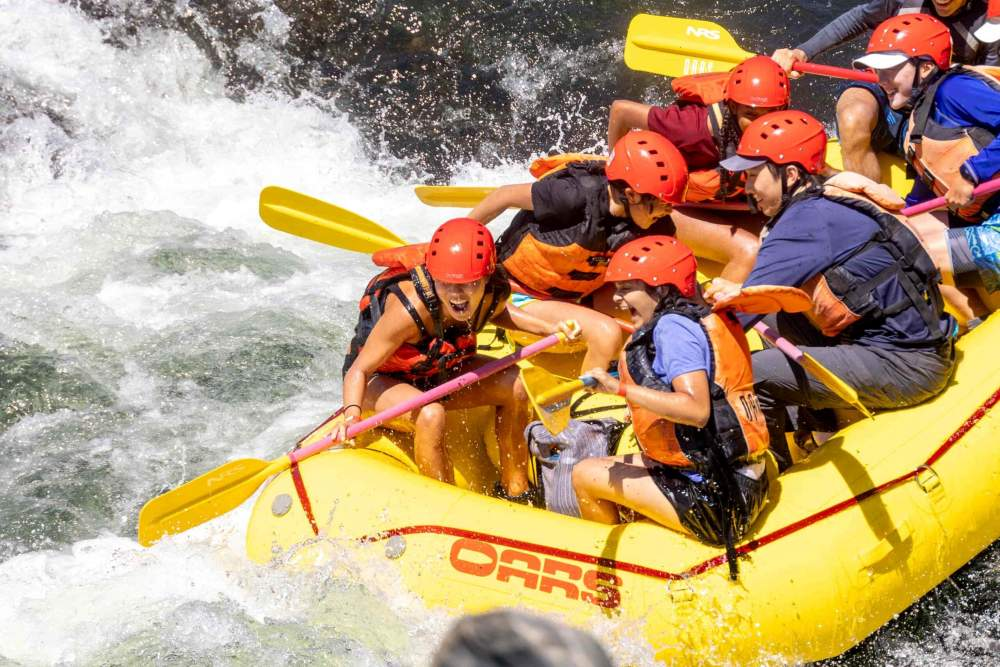
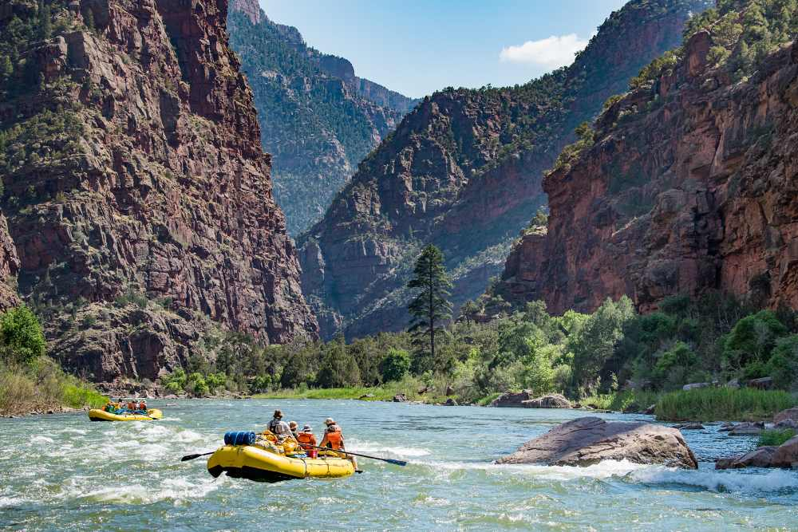
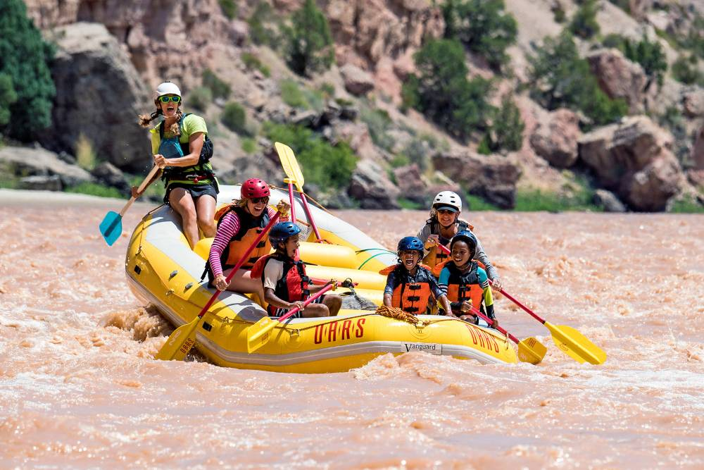
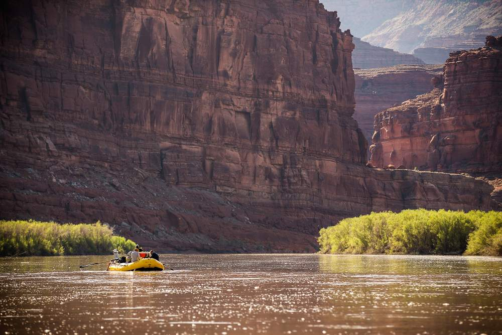
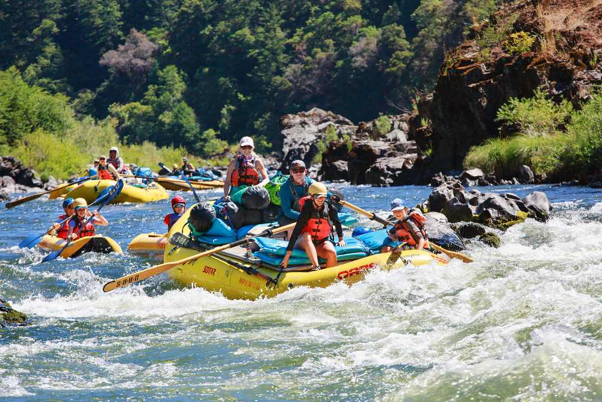
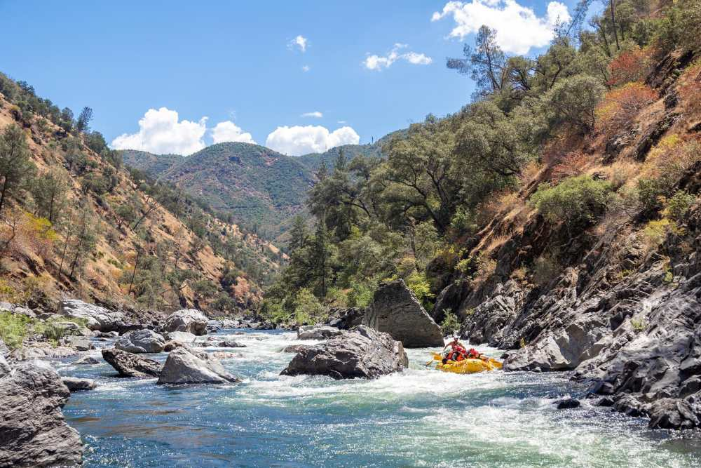
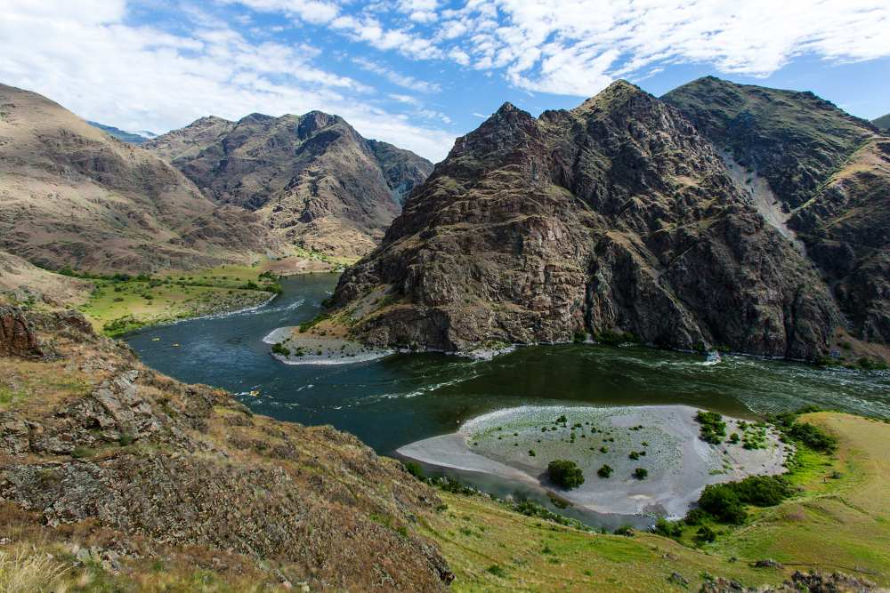
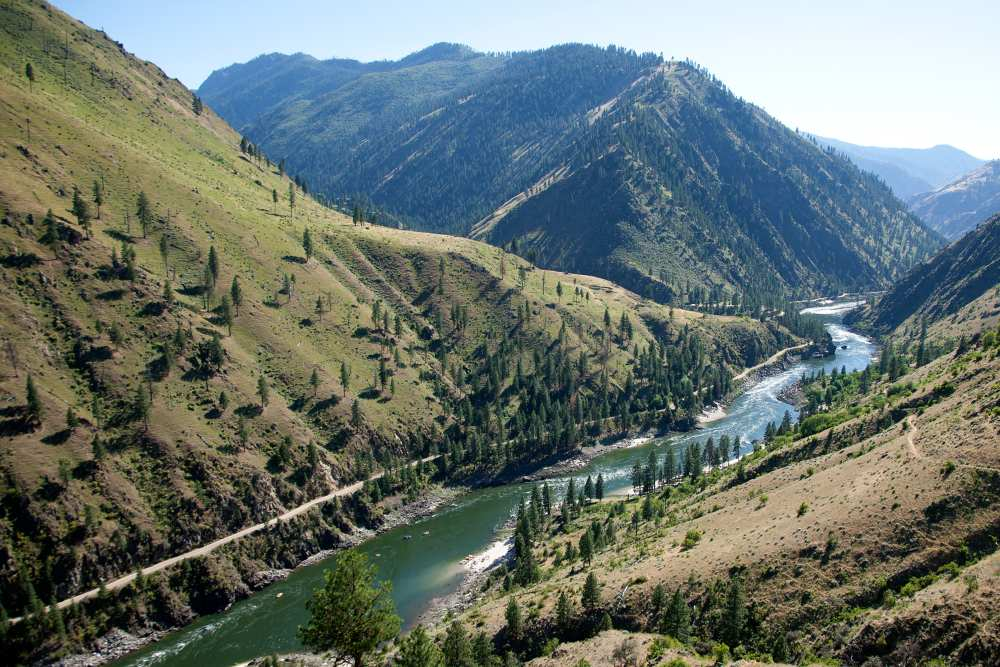
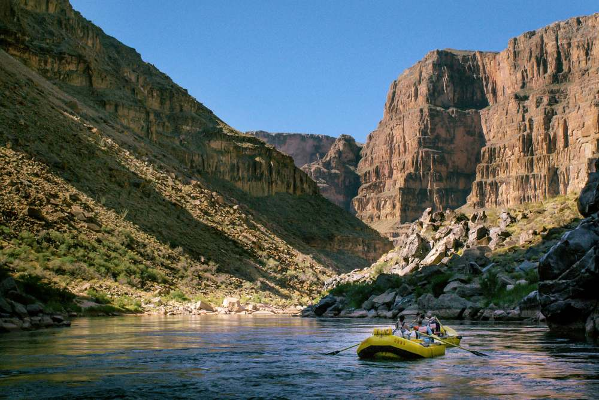
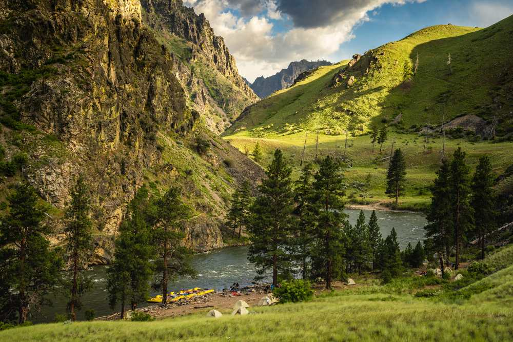

Find Your Adventure
Reservations can be made below or by calling 800-892-9223. Online reservations require at least 3 days advance notice. Some dates may be unavailable if fully booked.
All Our Adventures









All Available Trips
| Trip | Location | Adventure Level | Minimum Age | Price Range |
|---|---|---|---|---|
| South Fork American River Rafting Gorge | California | Easier to Moderate | 8 (10-12 during high water) | $144 – $189 |
| Green River Rafting through the Gates of Lodore | Utah & Colorado | Moderate | 7 (10-12 during high water) | $1,049 – $1,849 |
| Utah Whitewater Rafting through Split Mountain Canyon | Utah | Easier to Moderate | 6 (11 during high water) | $121 – $149 |
| Cataract Canyon Whitewater Rafting | Utah | Moderately Challenging | 9 (12-16 during high water) | $1,749 – $2,599 |
| Rogue River Rafting | Oregon | Moderate | 7 | $1,049 – $1,849 |
| Tuolumne River Rafting Near Yosemite National Park | California | Moderately Challenging | 14 (16 during high water) | $629 – $1,049 |
| Main Salmon River Rafting on the River of No Return | Idaho | Moderate | 7 (12-15 during high water) | $2,299 – $3,109 |
| Snake River Rafting through Hells Canyon | Idaho | Moderate | 7 (12 during high water) | $1,699 – $2,349 |
| Grand Canyon Rafting: Whitmore Wash to Pearce Ferry | Grand Canyon, Arizona | Moderate | 7 | $3,699 – $3,799 |
| Middle Fork of the Salmon River Rafting | Idaho | Moderately Challenging | 12 (15 during high water) | $3,799 – $4,199 |
Can't Decide?
Our guides can help you find the perfect adventure for your group, skill level, and budget — no obligation, just good advice.
Contact Us